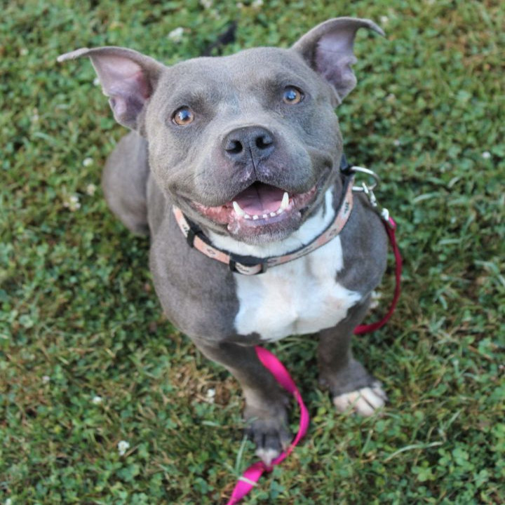

Anisa
Anisa

About
- Breed: American Bully
- Age: Adult, Approximately 5 years old
- Sex: Female
- Size/Weight: Medium, 40lbs
- Color: Gray/Blue/Silver, White/Cream
- Coat Length: Short
- House-Trained: Yes
- Health: Vaccinations up to date, spayed/neutered
- Good in a Home With: Other dogs, children
- Adoption Fee: $150.00
Meet Anisa
Anisa is a happy little cupcake who just enjoys life. She listens well most of the time, minus her energy bursts moments, and is house/crate trained. She does not have high energy requirements; however, to remain happy and healthy she does need adequate energy outlets such as daily walks or other outdoor adventures.
Good with Other Dogs? Anisa is good with both male and female dogs her size and larger (no idea in regards to small dogs) who are respectful of her space and allowing her to be social on her own terms. No high energy in your face dogs for her. She prefers her laid back canine friends. She can show some leash reactivity when seeing new dogs. We prefer to place her in a home as the only Queen of the castle, but will consider a home with another dog if possibly a good fit.
Cats? Anisa has never been around cats, so we're unsure of how she would be with one.
Children? Anisa is good with considerate people of all ages; however, she still has some undesirable habits such as jumping and not being mindful of what is in her way if she is on a mission. A small child could easily be knocked over, so this needs to be taken into consideration if there are young children in the home.
Activity Level: Moderate. She enjoys taking walks, doing some zoomies in the yard, but she also enjoys being a couch potato, happy balance!
Favorite Things: Belly rubs, playing in the water hose spray and being with her person!
*Blue coated dogs require a high quality diet (she is currently on grain free fish). They are prone to skin/coat issues, allergies ranging from mild to severe. Veterinary costs can become expensive over their lifetime.
PLEASE READ our adoption policies/requirements before submitting a application, thank you!